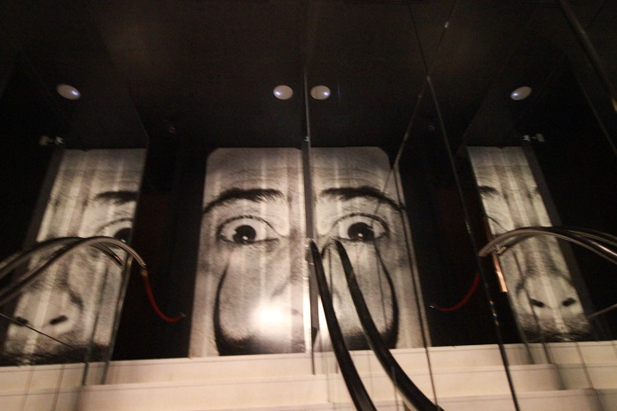

| 1 | : | Íbamos a participar en el tour para ir al museo Dalí en Figueres ese día. |
| 2 | : | Íbamos a encontrarnos con Kanako y Richard a las 7:45 en el vestíbulo del hotel. |
| 3 | : | A las 7:30 comenzamos a desayunar, tan pronto como el restaurante del hotel abrió y terminamos en 15 minutos. |
| 4 | : | Luego fuimos al vestíbulo, pero Kanako y Richard no aparecían. |
| 5 | : | Pensamos que ellos estaban durmiendo y le íbamos a pedir a la recepcionista que los llamara, pero Richard apareció. |
| 6 | : | Nos dijo que Kanako no podía encontrar su teléfono inteligente. |
| 7 | : | Luego pudo encontrarlo y apareció en el vestíbulo alrededor de las 8:00. |
| 8 | : | El tour iba a salir a las 8:30 desde la Plaza de Catalunya. |
| 9 | : | Teníamos que llegar allí 20 minutos antes del tour. |
| 10 | : | La plaza estaba a casi 15 minutos a pie del hotel. |
| 11 | : | Como teníamos 10 minutos hasta la hora de la reunión del tour, decidimos ir a la plaza en taxi. |
| 12 | : | Sin embargo no había ningún coche en la calle principal frente al hotel. |
| 13 | : | La calle estaba cerrada a causa del festival. |
| 14 | : | Corrimos a la plaza rápidamente. |
| 15 | : | Había varios autobuses en la plaza pero pudimos encontrar el autobús turístico para ir al museo Dalí pronto. |
| 16 | : | El autobús partió a tiempo con un guía que hablaba inglés fluido. |
| 17 | : | El paisaje del autobús también era solo de campos de olivo y John y yo estábamos durmiendo profundamente. |
| 18 | : | Aproximadamente en una hora, llegamos a la terminal de autobuses en Girona. |
| 19 | : | Desde allí hicimos turismo en el casco antiguo de Girona con una guía local. |
| 20 | : | Luego tuvimos casi 2 horas de tiempo libre. |
| 21 | : | Nos separamos de Kanako y Richard, caminamos en el casco antiguo, despacio, tomando fotos. |
| 22 | : | Girona tiene 2,000 años de historia y originalmente fue construida por íberos que vivían en la península Ibérica. |
| 23 | : | De la llegada de los romanos y judíos, y de la invasión de los musulmanes, hay lugares que tienen esa historia en todo el casco antiguo. |
| 24 | : | Yo no podía ver mucha diferencia entre los vestigios de esas culturas porque todo era exótico. |
| 25 | : | Pero el casco antiguo era muy bonito y la vista del puente era maravillosa. |
| 26 | : | Fuimos a la iglesia y al museo, judíos también. |
| 27 | : | Era una ciudad pequeña, pero el tiempo había pasado muy rápido. |
| 28 | : | El lugar de reunión estaba en la terminal de autobuses y tardaba casi 15 minutos a pie desde el casco antiguo. |
| 29 | : | Compramos los panes que se llaman Xuxo, recomendados por la guía y regresamos a la terminal de autobuses temprano. |
| 30 | : | Llegamos a la terminal 20 minutos antes de la hora de la reunión y comimos Xuxo. |
| 31 | : | Era pan frito, con crema y cubierto de azúcar. |
| 32 | : | Estaba delicioso, pero demasiado dulce. |
| 33 | : | Regresamos al autobús y en aproximadamente una hora llegamos a Figueres. |
| 34 | : | Figueres es una ciudad cerca de la frontera con Francia donde nació Dalí y terminó su vida. |
| 35 | : | Desde el autobús ya podíamos ver el edificio del museo del Teatro-Museo Dalí. |
| 36 | : | El exterior con varios objetos era único, por eso era muy fácil de encontrarlo. |
| 37 | : | Nos bajamos del autobús y caminamos por casi 5 minutos y llegamos a la entrada. |
| 38 | : | El edificio había sido un teatro cívico pero en 1974 fue abierto como el Teatro-Museo Dalí. |
| 39 | : | Entramos con el guía quien había viajado en el bus de Barcelona con nosotros. |
| 40 | : | El interior era completamente diferente a otros museos normales y el diseño era único. |
| 41 | : | A John le gusta Dalí, por eso él veía las obras detenidamente. |
| 42 | : | Yo no podía entender sus obras, así que lo disfrutaba como un parque de atracciones. |
| 43 | : | Después de ver el museo libremente por 2 horas, salimos. |
| 44 | : | El guía nos había dado el boleto para entrar a otro museo que se llama Museo Dalí Joyas por eso fuimos a allí. |
| 45 | : | Se muestran las joyas y los dibujos de los diseños de Dalí. |
| 46 | : | Todas eran extrañas. |
| 47 | : | Creí que nadie usaría las joyas aunque les interesaran. |
| 48 | : | No tuvimos tiempo para caminar en la ciudad de Figueres y volvimos al autobús. |
| 49 | : | El autobús salió de Figueres alrededor de las 17:30. |
| 50 | : | En el autobús reservamos un restaurante para invitar a Kanako y Richard, la última noche en España. |
| 51 | : | Un árbitro mayor de boxeo de John nos había recomendado unos restaurantes en Barcelona y elegimos uno de ellos. |
| 52 | : | Después de las 19:00, llegamos a la Plaza de Catalunya en Barcelona. |
| 53 | : | El restaurante estaba un poco lejos, así que tomamos un taxi. |
| 54 | : | El restaurante que se llama Pez Vela, estaba a lo largo de la costa. |
| 55 | : | Parecía que era muy popular y los clientes sin reserva no pudieron entrar. |
| 56 | : | El empleado nos preguntó cuáles asientos queríamos, en la terraza o adentro. |
| 57 | : | Parecía que en la terraza era bueno porque veíamos la playa, pero le pedimos asientos adentro. |
| 58 | : | Fue correcto. |
| 59 | : | Entramos al restaurante y luego comenzó a llover mucho. |
| 60 | : | Todos los clientes en la terraza se movieron a los asientos vacantes adentro. |
| 61 | : | El interior del restaurante era muy bonito y los empleados eran muy amables. |
| 62 | : | Pedimos dos paellas y un plato de pollo. |
| 63 | : | Nos sirvieron las paellas en dos paelleras muy grandes. |
| 64 | : | Era bueno para cuatro personas. |
| 65 | : | Pasamos un buen momento comiendo las deliciosas paellas. |
| 66 | : | Mientras comíamos calculamos el costo que cada uno había pagado. |
| 67 | : | Nosotros habíamos pagado más, por eso Kanako nos pagó la diferencia en euros en efectivo. |
| 68 | : | Inesperadamente obtuvimos el euro en efectivo el último día. |
| 69 | : | Íbamos a pagar el restaurante con ese efectivo, pero Richard ya lo había pagado. |
| 70 | : | Tratamos de pagarlo, pero Richard no lo recibió. |
| 71 | : | Queremos darle algo, de otra forma, algún día. |
| 72 | : | Cuando salimos del restaurante, la lluvia había parado y el mar estaba muy tranquilo. |
| 73 | : | Nos dirigimos al hotel en taxi, pero jabamos del taxi en el camino porque todavía la calle estaba cerrada. |
| 74 | : | Luego fuimos a un café y comimos los últimos churros en España. |
| 75 | : | Al día siguiente íbamos a salir más temprano que Kanako y Richard. |
| 76 | : | Por eso nos despedimos de ellos allí porque no podríamos verlos al día sigiente. |
| 77 | : | Regresamos al hotel y empacamos nuestro equipaje. |
{kind=link}
{kind=link}
{kind=link}
{kind=link}
{kind=link}
{kind=link}
{kind=link}